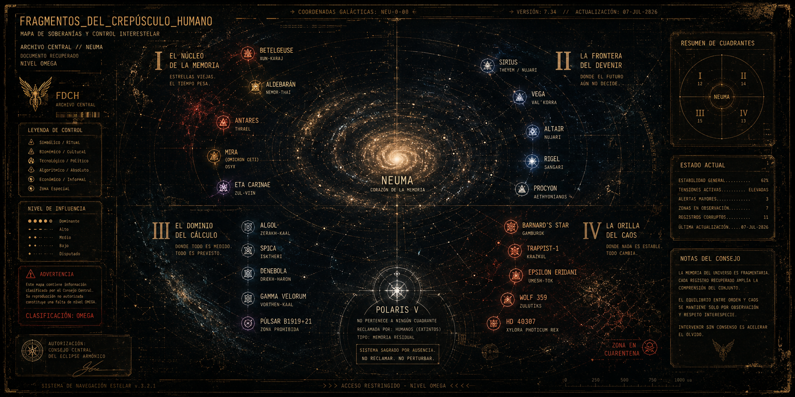

FRAGMENTO_CERO · NIVEL_4
FDCH
Documentación oficial del universo Fragmentos del Crepúsculo Humano. Cronologías, archivos, plataformas y puntos de acceso al proyecto.
ARCHIVO_0001
FRAGMENTOS DEL CREPÚSCULO HUMANO
Fragmentos del Crepúsculo Humano es un universo narrativo transmedia en construcción permanente. Novelas, relatos, documentos, registros, plataformas digitales y experiencias interactivas conforman un mismo proyecto creativo que continúa expandiéndose.
Cada historia aporta una perspectiva diferente sobre un mismo universo. Los acontecimientos, personajes y documentos dialogan entre sí para construir una experiencia donde cada descubrimiento amplía el significado del conjunto.
La memoria, la identidad, la tecnología, la humanidad, la resistencia y el futuro constituyen los ejes centrales del proyecto. Cada fragmento incorpora nueva información y contribuye al desarrollo de un universo que evoluciona junto con sus lectores.

MAPA DE SOBERANÍAS ESTELARES · Versión 7.34
ARCHIVO_0002
PUNTOS DE ACCESO
Explorá las distintas puertas de entrada al universo de Fragmentos del Crepúsculo Humano.